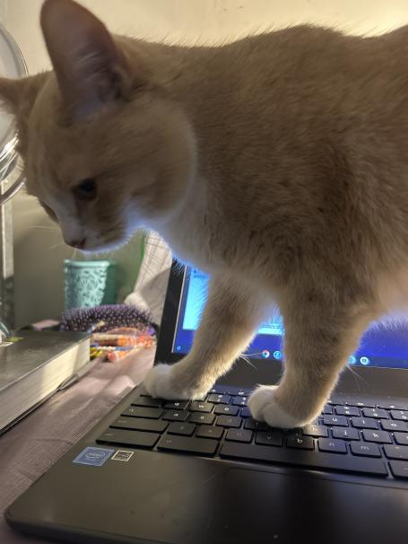

Citations

- Domestic cat. Animals. (n.d.). https://www.nationalgeographic.com/animals/mammals/facts/domestic-cat
- Domestic cat. Animals. (n.d.). https://www.nationalgeographic.com/animals/mammals/facts/domestic-cat
- Kelley, T. L. (2022, December 13). 31 fascinating cat facts to make you the master of feline trivia. Daily Paws.
https://www.dailypaws.com/living-with-pets/pet-owner-relationship/facts-about-cats
- Royalty-free images, photo stock, Video & Music | Depositphotos. (n.d.). https://depositphotos.com/
- Team, V. (n.d.). Survey highlights benefits of cats to mental wellbeing. MRCVSonline.
- https://mrcvs.co.uk/en/news/18792/Survey-highlights-benefits-of-cats-to-mental-wellbeing
- *****Also huge shoutouts to my friends Kayla and Rafee who sent me pictures of their cats which were indeed showcased on this website*****